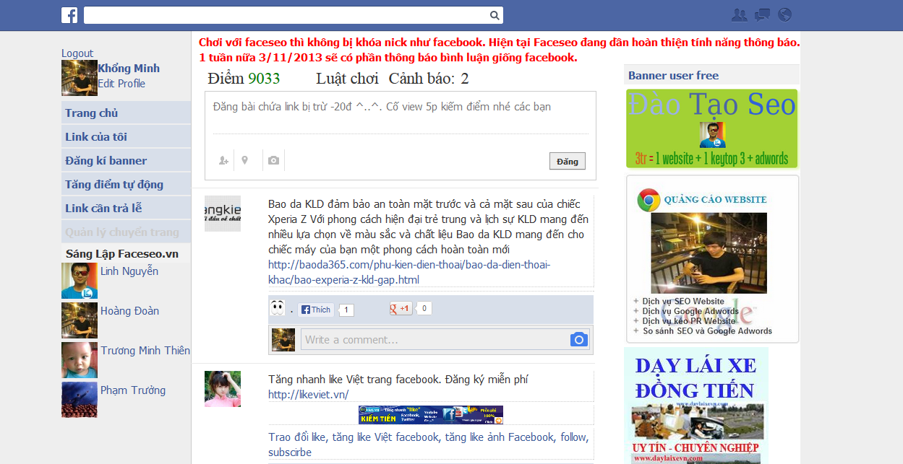
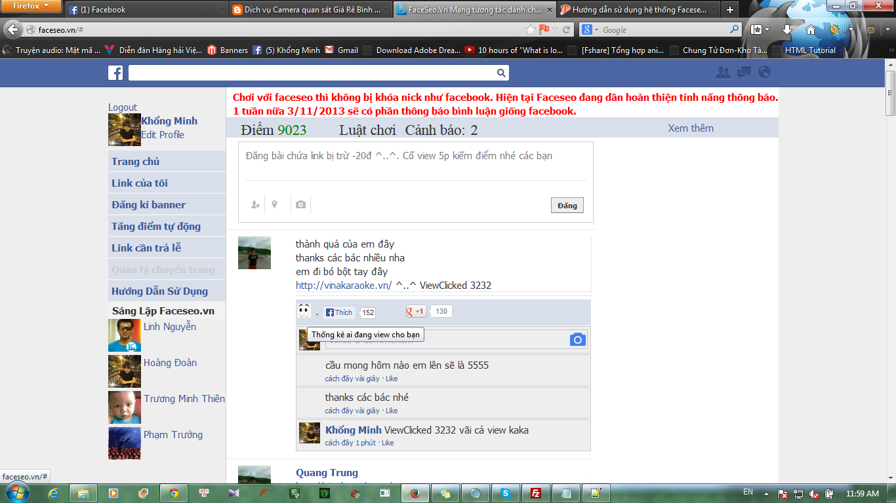
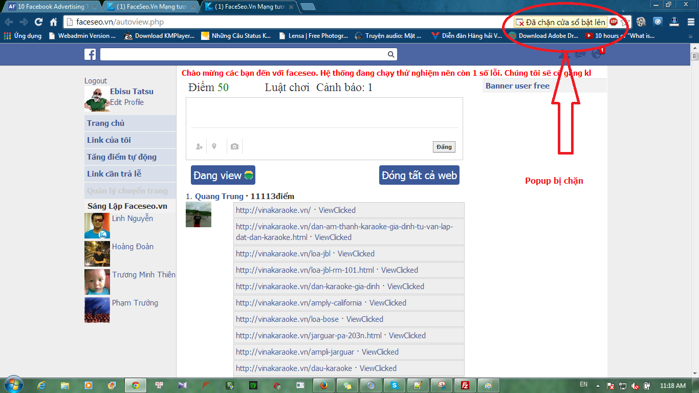
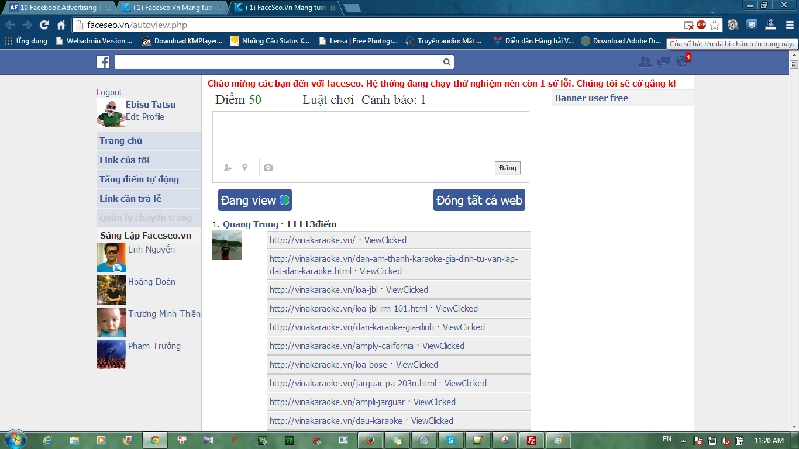
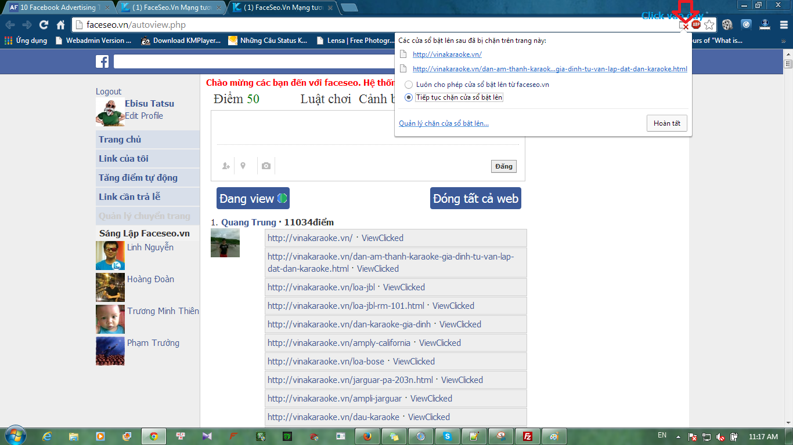
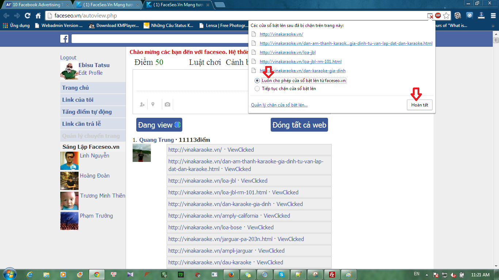
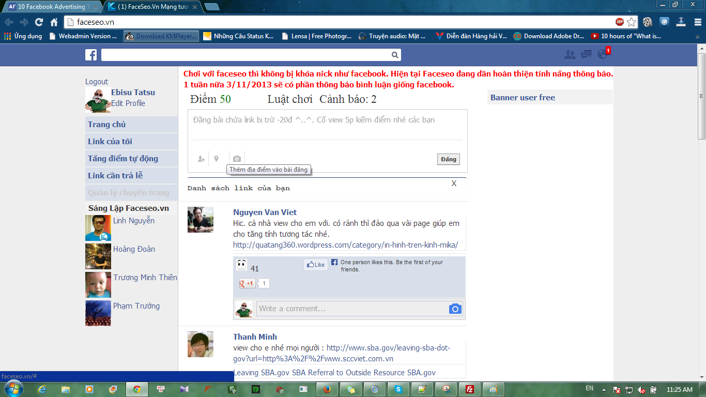
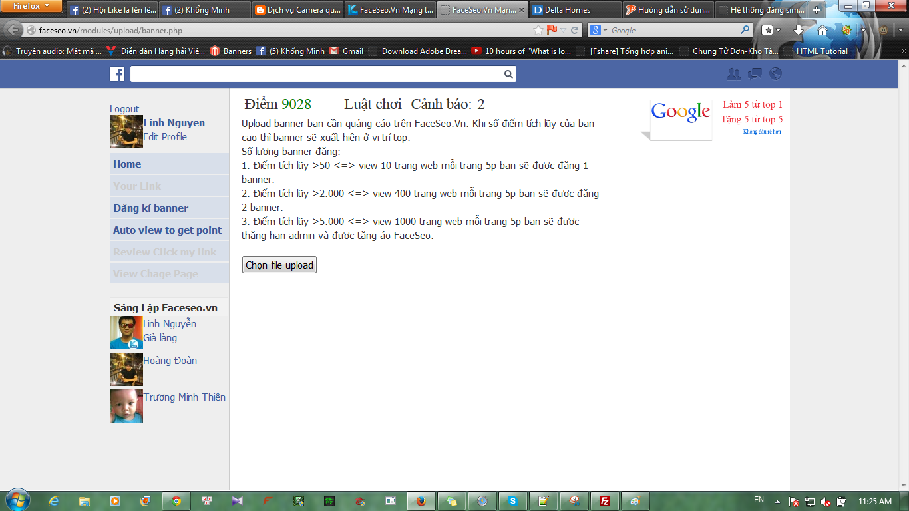
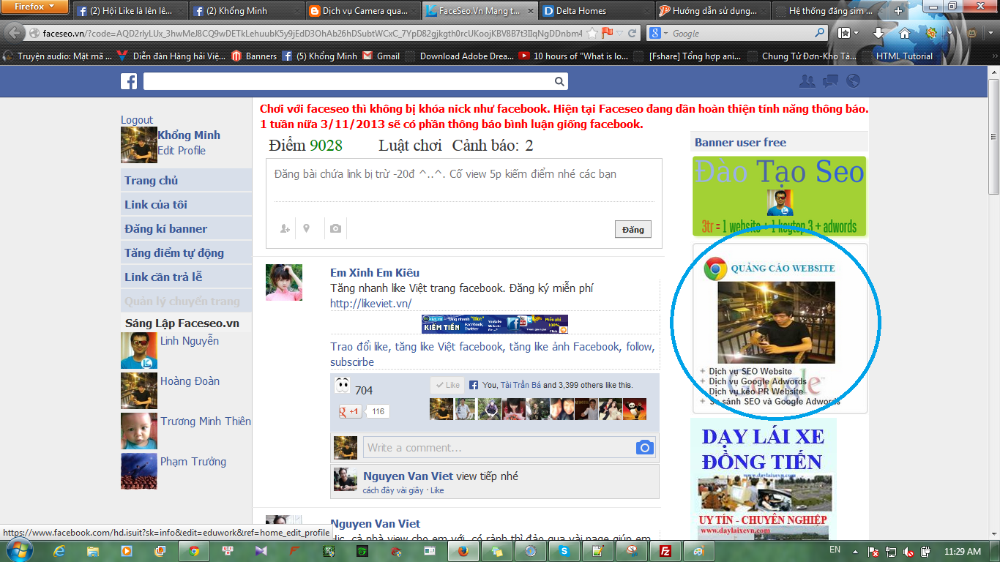

Cảm ơn bạn đã sử dụng hệ thống của chúng tôi!
Đây là một chương trình rất hữu ích cho SEO và các shop cũng như website cá nhân quảng bá thương hiệu của mình một cách nhanh nhất.
Đến với FaceSEO các bạn sẽ:.
- Tăng số lượt View tương tác trực tiếp không cần phải thông qua bất cứ một bên thứ 3 can thiệp vào.
- Công bằng khi thực hiện view và cộng. Không phải lo về vấn đề mình cộng và view thực cho người khác mà họ lại không view lại đúng cho mình.
- Tất cả view trên hệ thống của chúng tôi đã được tối ưu để Google đánh giá với mức điểm cao nhất.
- Dễ sử dụng cho mọi người không cần cài đặt như các phần mềm quản lý view trước giờ. Vì môi trường tương tác là môi trường Web nên có rất nhiều điểm mạnh hơn so vơi sử dụng các ứng dụng (application) trên window hay một nền tảng hệ điều hành khác.
- Được gặp và tư vấn trực tiếp bởi các SEOer đã có nhiều kinh nghiệm thực tế cũng như các chuyên gia Facebook media, Marketing, Bảo mật....
-----------------------------------------------
Cách sử dụng và Điểm ( Point):
------------------------------------------------
Bước 1:
Đăng nhập hệ thống bằng cách login with Facebook.
Bước 2:
Sau khi đăng nhập bạn sẽ thấy một trang có cấu trúc như hình sau:

Bước 3:
Nếu điểm số của bạn lớn hơn 5 ( Mặc định ban đầu mỗi user được tặng 50đ) thì bạn có thể post link của mình lên Faceseo cho mọi người vào view cho bạn. Mỗi lần post link bạn sẽ bị trừ 5đ. Vì thế bạn có thể dặt nhiều link/1 post.
Cách quản lý điểm:
Điểm trong Faceseo được quản lý hết sức chặt chẽ.:
Như các bạn đã biết: Google đánh giá cao những view được trực tiếp người dùng mở ( bằng click chuột trái) và ở lại xem trang trong vòng 5p. Vì thế Faceso cũng đánh giá dựa trên các tiêu chuẩn này nhằm cộng điểm một cách công bằng và phản ánh đúng những gì google muốn.
- Nếu bạn click vào link và view nó trong 5p bạn sẽ được 5đ vào ngân hàng điểm của mình. Đồng thời người được các bạn view cũng sẽ bị trừ 5đ trong ngân hàng điểm. Chính vì thế các bạn đừng ngạc nhiên khi thấy điểm của mình bị giảm xuống. Chúng tôi các Admin của faceseo cam kết không can thiệp vào điểm của người dùng để tạo một sân chơi công bằng cho mọi người.
- Nếu bạn click vào link và view không đủ 5p hoặc đang view tắt Faceseo thì bạn sẽ không được cộng điểm và bạn sẽ bị cảnh cáo. Nếu cảnh cáo không được chuộc lỗi thì khi số lượng đạt tới 15 các bạn sẽ bị ban nick và không được sử dụng Faceseo nữa. Chúng tôi phải làm như thế là vì các bạn thường hay phàn nàn về chuyện có người giúp mình nhưng chỉ mở trang + rồi thoát ra ngay. Google không đánh giá tốt vê việc này và nó còn góp phần làm băng bound rate của hệ thống.
- Bạn sử dụng hệ thống tự động kiểm điểm thì 1 trang các bạn view trong 5p sẽ chỉ được cộng 1đ. Chúng tôi sẽ có hướng dẫn sử dụng hệ thống tự động kiếm điểm ở mục sau
Quản lý view, G+, like:
Giao diện chinh của một Post

Ở đây bao gồm:
Icon mắt nhấp nháy biểu tượng cho việc thống kê những người dùng hiện đang view cho bạn.
Like,G+ ( số lượng like,G+ thực của link các bạn post)
ViewClicked 3232 Ở đây nghĩa là đã có 3232 lượt view cho link Post này.
Bạn muốn sử dụng tự động tăng điểm ( Auto view) thì bạn phải tắt các phần mềm chặn pop up. Ví dụ extension: adblock plus của Chrome
Adblock Plus mặc định khởi động thì bạn sẽ có hình như sau:

Lúc đó bạn click vào như hình:

Bạn sẽ gặp bảng thông báo:

Lúc này chúng ta sẽ sử dụng luôn cho phép bật pop up từ trang faceseo như hình:

Lúc này Faceseo sẽ tự động mở 5 link từ trên xuống của mọi thành viên( link được sắp sếp theo thứ tự điểm của người dùng) sau 5p thì 5 trang này sẽ tắt và tự động mở 5 trang tiếp theo. Khuyễn khích các bạn nên sử dụng Firefox để auto view.
Bạn muốn tắt AutoView thì kết thúc một phiên Auto bạn bấm vào nút "Tắt Tất Cả Web"
Khi mới tham gia hệ thống bạn chưa view đủ 10 page thì menu bên trái của bạn sẽ không có chuyên mục upload banner:

Khi view 10 website trở lên <=. kiếm được 50 điểm trở lên bạn sẽ thấy menu có thêm một chuyên mục là upload banner:

Lúc này bạn chỉ cần chọn banner cần upload lên và banner của bạn sẽ xuất hiện ở bên phải theo thứ tự point của người dùng ( Point= điểm):

Tất cả các phần mềm auto khác đều là ứng dụng phát triển để chạy trên nền tảng một hệ điều hành nhất định đều không thể có mức độ tương tác trực tiếp như Faceseo. Tại sao chúng tôi lại nói vậy?